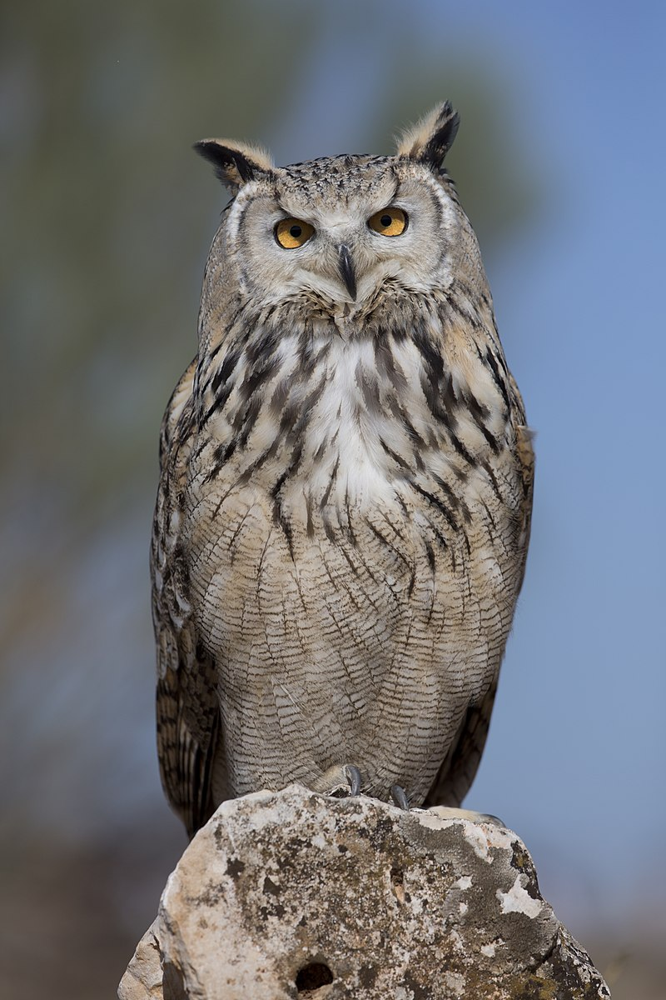
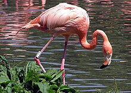
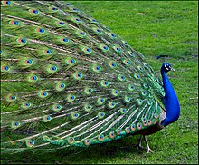

Bize Ulaşın
Youtube
Sayfalar
Baykuş
Flamingo
Tavuskuşu
Baykuş

Başları büyük ve tüylüdür. Kuyrukları kısa olmakla beraber, kanatları enli ve uzundur. Bir kısmının kanat açıklığı, bir adam boyuna ulaşır. Serçe kadar küçük olanları da vardır. Gagaları kıvrık, pençeleri keskin, kanca tırnaklı ve döner parmaklıdır. Kuvvetli pençeleri adeta avına kenetlenir.
Baykuşlar tam bir sessizlik içinde avlanır. Bütün vücudu yumuşak ve ince tüylerle kaplıdır. Tüyler, uçuş sırasında tabii bir susturucudur. Uçuş esnasında kanatlarının “pırpır” sesi duyulmaz. İri gözleri, başlarının yanında değil önündedir. Aşırı büyüklükteki gözleri, göz oyuğunda hareket edemez. Araba farı gibi yuvalarında sabittir. Baykuşlar boynunu 270 derece çevirerek panoramik bir görüş sağlayarak çevresini kontrol edebilir. Dişi baykuş erkeklerinden daha iri olup, 2-10 yumurta yumurtlarlar. Kuluçka süresi 30-40 gündür. Yumurtadan çıkan yavruların göz ve kulakları kapalıdır. Yavruların yuvada kalma süresi farklıdır.
“Al purple” yani “mor ışık görüntüsüne” sebep olan kimyasal bir madde bulunur. Rod hücreleri, en küçük bir ışığı bile kimyasal bir sinyale çevirirler. Böylece insanın sadece bir ışık parıltısını fark ettiği yerde baykuş buradaki cismi bütün teferruatı ile görür. Bütün kuşlarda üst göz kapağı alttakine geldiği halde baykuşlarda olay tersinedir. Mavi rengi görebilen tek kuş türüdür.
Baykuşların görme ve işitme kabiliyetleri son derece hassastır. Çok az ışıkta avlarını yakalayabildikleri gibi, zifiri karanlıkta da işitme duyularıyla yerini tespit ederek yakalarlar. Kulakları, en küçük hışırtıyı işitebilecek duyarlıktadır. Hassas kulaklarıyla, gecenin sessizliğinde uçan pervanenin kanat sesini veya bir tohumun çiğnenişini, hatta tam sessizlikte düşen iğnenin sesini bile işitebilirler.
Baykuşun geniş yüzü, nispeten sert ve kavisli tüylerle kaplıdır. Tüyler bir kepçe gibi sesleri toplar ve kulağa yansıtır. Bazı baykuş cinslerinin kulak delikleri öyle büyüktür ki, başın yan tarafını tamamen kaplar. Ayrıca baykuşların başı geniştir ve kulakları diğer kuşlara göre birbirinden daha uzaktır. Böylece ses dalgası bir kulağa çarptıktan sonra diğerine gelir. Baykuş bu son derece küçük zaman aralığı içinde sesin geldiği yönü tayin eder. Baykuşların ilginç özelliklerinden biri de kulaklarının perdeli oluşudur. İstedikleri zaman açar, istediklerinde kaparlar. Dinlenme halinde ve yavaş uçuşlarında kulak perdesini açar, hızlı uçuşlarında ise kaparlar.
Sayfa Başına Dön
Flamingo

Flamingo ya da allı turna Phoenicopteridae familyasını oluşturan kuşların ortak adıdır. Yaşayan üç cins içinde sınıflandırılmış altı türü bulunur. Ancak biyologların en yeni verdiği sonuçlara göre Avrupa türü, Rosa türü ve kendi içinde ve çaprazlama üreyebildiklerinden 2 alt türü olan Küba türü olarak türlendirilir.
Flamingolar, uzun ve ince bacaklara, yine uzun, eğri bir boyuna ve rosa rengi tüylere sahiptir. Belirgin özelliklerinden biri kıvrık bir gagasının olması ve bunun üst kısmıyla daldırıp da yiyecekleri su ya da çamurdan çıkarırken filtre vazifesi görmesidir. Tüylerindeki kırmızı renk tonları, yedikleri yiyeceklerin içerdiği karotin miktarına göre değişir. Esaret altındaki genç kuşlar, çok az karotin içerikli besinler aldığından beyaz tüylere sahiptirler.
Flamingolar Afrika, Güneybatı ve Orta Asya, Güney Avrupa, Güney ve Orta Amerika'da görülürler. Güney İspanya ve Güney Fransa'da da kuşun en büyük ve yaygın türü olan rosa flamingo (Phoenicopterus roseus) kuluçka zamanı görülürler. Bu tür 130 cm boyunda olup Afrika, Asya ve Güney Avrupa'da yaşar.
Almanya'nın Hollanda sınırında ise çeşitli flamingo türlerinden bir koloni yaşar ki bu koloni dünyanın en kuzeyde yaşayan kolonisidir.
Flamingolar büyük topluluklar halinde, durgun sulara sahip göl, tuz gölü ya da lagünlerde yaşarlar. Diğer hayvan türlerinin az bulunduğu, sıra dışı doğa koşullarının bulunduğu yerlere gelirler. Örnek olarak tuz gölleri ya da alkalik içerikli göller verilebilir. Bu kuş türü tuzlu ve sodalı sığ sularda yaşar. Bunların dışında ısı farklılığının aşırılıklar gösterdiği durumlara da katlanabilirler. Bulundukları ortamda kuş gruplarının birey sayısı 1 milyonu bulabilir.
Genelde yengeç, karides, artemia gibi eklem bacaklı hayvanları, karınca larvası ve yosun yerler. Aşağı doğru eğik gagaları sayesinde, yiyecekleri çok zor ortamlarından dahi çıkarabilirler.
İç sistematikte iki farklı konsept vardır: Flamingoların Phoenicopterus, Phoeniconaias ve Phoenicoparrus olarak üç cinse bölünmesi veya tüm türlerin ortak olarak Phoenicopterus cinsinde birleşmesi. Son varyete daha eski olurken ilk olarak bahsedilen de yeni değildir. Phoenicoparrus 1856'da Charles Lucien Jules Laurent Bonaparte tarafından, Phoeniconaias 1869'da George Robert Gray tarafından bölünmüştür. Her iki varyete bugüne kadar gelir. Phoenicopterus diğer ikisinden daha az özelleşmiş bir pul yelpazesinden ayırt edilirken, Phoeniconaias ve Phoenicoparrus ise bir arka tırnağın olması veya olmaması ile farklılaşırlar.
Sayfa Başına Dön
Tavuskuşu

Tavus kuşu, sülüngiller (Phasianidae) familyasında Pavo cinsindeki iki tür kuşa verilen isimdir. Kur yapma döneminde, erkek tavusun açarak sergilediği kuyruklarıyla tanınır. Dişi tavus kuşu parlak yeşil boyunlu, gövdesi ise kahverengi ya da gri tonlu kahverengi renklidir.
Üç farklı türü bulunmaktadır: Mavi tavuskuşu (Pavo cristatus)Yeşil tavuskuşu (Pavo muticus)Kongo tavuskuşuMavi tavuskuşu Hindistan'ın alt kesimlerinde yaşar. Tavuskuşu Hindistan'ın ulusal kuşu olarak gösterilir.
Yeşil tavuskuşu Myanmar'ın doğusundan Cava'ya kadar olan bölgede yaşar. Yeşil tavuskuşu Dünya Korunma Birliği tarafından nesli tükenmekte olan hayvanlar listesine alınmıştır. Bunun nedeni avlanma ve yaşadıkları coğrafyanın bozulmasından kaynaklanmaktadır.
Üç tavus türü bilinmektedir: Hindistan'da yaşayan mavi tavus (Pavo cristatus), Hindistan yakınındaki adalarda rastlanan Cava tavusu (Afropavo congensis). Mavi tavus yüzyıllardan beri evcilleştirilmiştir ve erkeğin 1,50 m'ye varan kuyruğu, çok uzamış sırt teleklerinden oluşur. 1936'da bulunan Kongo tavuskuşu tropikal ormanların içinde yaşar. Hepsi yerde beslenir ve geceleyin ağaca tüner. Hepçil beslenir, fırsat bulursa yılanlara saldırır ya da kelebeklerin ardında koşar. Çiftleşmeden önce erkek tavus dişiye kur yapar; ama aynı gösteriyi başka bir erkeğin karşısında da yaptığı olur. Tavus daha çok tüylerinden dolayı aranır; ama eti de beğenilir: imparatorluk zamanında tavus eti; Romalı zenginlerin sofrasını süslerdi.
Sayfa Başına Dön